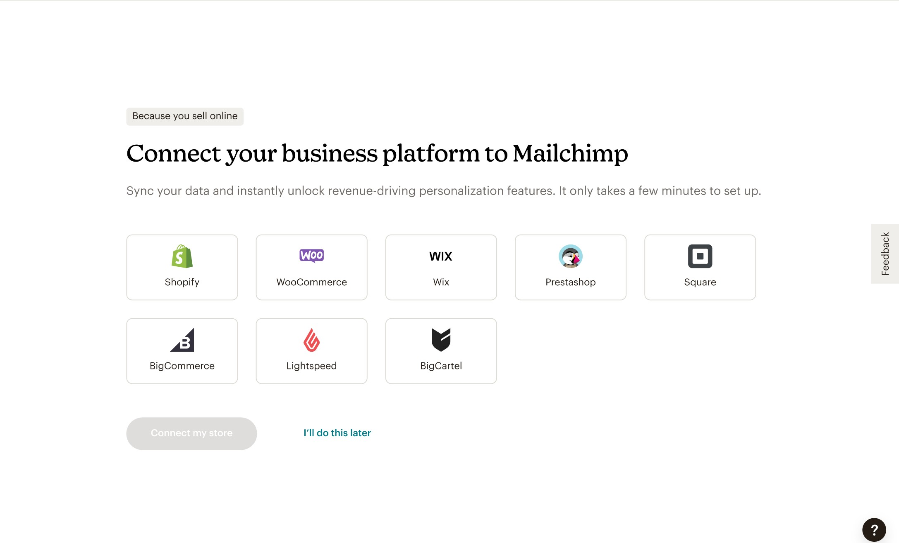
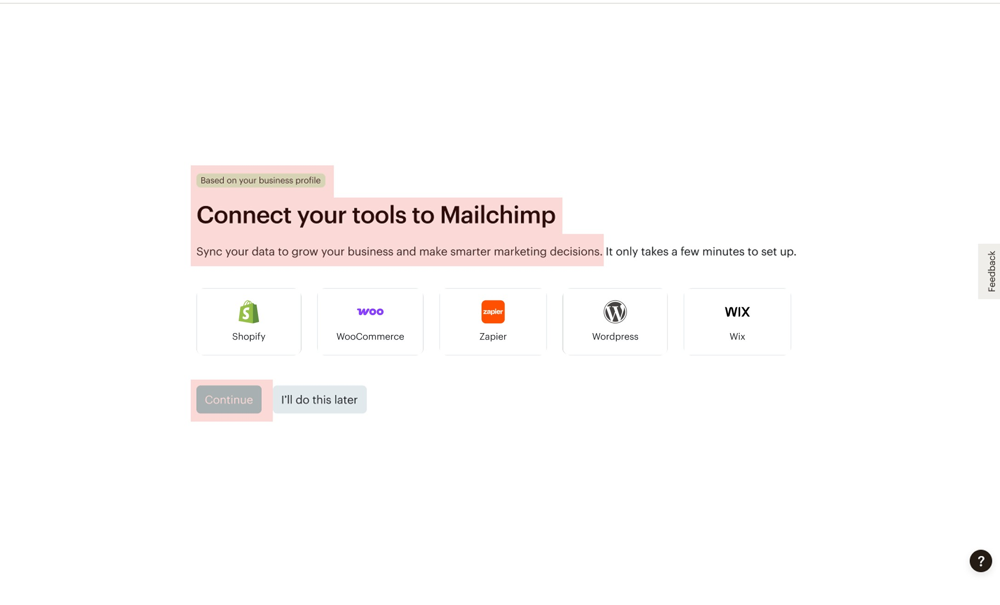

@mailchimpai modelsplatform mindsetshipped · may 2025
I designed a full-screen experience in the onboarding flow to
recommend relevant integrations to new users based on their business type and URL,
significantly increasing integration connection rates and improving customer payoff.
Surface
Full-screen takeover in the onboarding flow, with a homepage task fallback
Team
1 Product Manager · 3 Engineers · 1 Designer (me) · 6 AI Data Science & ML Scientists
Scope
Product Design · User Research · Prototyping
THE PROBLEM
A smoother transition for Mailchimp switchers, but the system only reached one segment
The existing system targeted self-reported e-commerce customers
right after account setup, prompting them to connect their store. It worked well for
that segment, but missed everyone else: non-e-commerce customers and anyone who
skipped the e-commerce question got no relevant recommendations at all. That gap
capped the overall connection rate and likely cost payoff and retention across a
much broader slice of new users.
RESULT
A personalized onboarding moment that lifted connection rate across the board
The solution: a First-Time User Recommendations experience
powered by an A2D model, informed by web-scraped and third-party data, that surfaces
a ranked list of relevant integrations for non-e-commerce users with a known URL. It
appears as a full-screen moment right after account setup, with a fallback task on
the homepage if it's not completed right away.
+677bps lift in 14-day integration connection rate
Driven by both non-ecommerce (604 bps) and e-commerce (73 bps)
integrations, expanding a strategy that had previously only worked for
self-reported e-commerce customers.
01
677bps
14D Connection Rate Lift
Across non-ecommerce and e-commerce segments combined, expanding a win that used to be e-commerce-only.
02
31.2%
View-to-Click Rate
Of users who saw the recommendation screen, nearly a third clicked to connect an integration.
03
15%
Completion Rate
Completed a full connection, outperforming the prior e-commerce-only takeover experience.
CONTEXT
Customers who integrate their tools pay off and retain at higher rates.
A June 2024 experiment had already proven this out for
e-commerce customers, lifting integration connections by over 40%. The team's next
goal was to extend that same win to a broader audience.
KEY DECISIONS
Two calls that shaped the experience, and why I made them
With limited time to size this opportunity, I partnered closely
with ML and Data Science and leaned on what we'd already learned from the earlier
e-commerce experiment rather than starting research from scratch.
DECISION 01
Used direct, inclusive language instead of vague, e-commerce-specific copy
The old copy referred to "business platforms," which read as
e-commerce-specific and didn't test well in prior research. I generalized it to "tools"
so the same screen felt relevant regardless of business type, and kept everything else
on the screen the same so we could isolate which change moved the metric.

before

after
DECISION 02
Replaced a static popularity list with a real-time, ranked model
The previous list ranked integrations by overall popularity, not
relevance to the customer's business. I worked with ML and Data Science to surface a
ranked top-8 list from an A2D model informed by web-scraped and third-party signals,
with thresholding built in so low-confidence predictions never reached the screen.
WHAT'S NEXT
Interjection designs clearly move the needle, and that gave us the data to be bolder.
I worked with the
Homepage team to expand the interjection beyond first-time setup, surfacing it on
subsequent logins too. I left the team before those changes shipped, but leadership
carried the experiment further, applying what we'd learned to other parts of the
product.